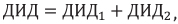
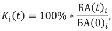
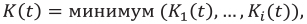
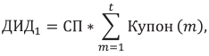
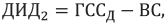
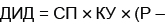
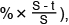
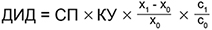
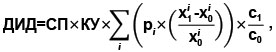

Приложение №1
Инвестиционная декларация
к договору страхования по программе «{{policy.product}}»
№ {{policy.number}} от {{policy.issueDate}} г. (далее – Декларация)

Страховщик: ООО СК «Росгосстрах Жизнь».
Лицензии Банка России: {{insurer.license}}, ИНН {{insurer.INN}}, КПП {{insurer.KPP}}
Юридический адрес: {{insurer.address}}
Реквизиты банка: {{bankInfo}}
Телефон круглосуточного Контакт-центра: 8 800 100 12 10 (бесплатный номер для
звонков по России).
Для оплаты считайте данный штрих код
в мобильном приложении интернет-банка
ДОГОВОР СТРАХОВАНИЯ № {{policy.number}} от {{policy.issueDate}} г.
по программе «{{policy.product}}»
на основании {{policy.rule}} (далее по тексту – Правила).
| Фамилия Имя Отчество: | {{holder.fullName}} | Пол: | {{holder.gender}} | |||
| Дата рождения: | {{holder.dateOfBirth}} | Место рождения: | {{holder.birthPlace}} | |||
| Телефон: | {{holder.phoneNumber}} | Гражданство: | {{holder.citizenship}} | |||
| E-mail: | {{holder.email}} | |||||
| Документ, удостоверяющий личность: | {{holder.document.typeAndSN}} | Дата выдачи: | {{holder.document.dateOfIssue}} | |||
| Кем выдан: | {{holder.document.issuedBy}} | |||||
| Адрес постоянной регистрации: | {{holder.registrationAddress}} | |||||
| Почтовый адрес: | {{holder.postAddress}} | |||||
| Фамилия Имя Отчество: | {{insured.fullName}} | Пол: | {{insured.gender}} | |||
| Дата рождения: | {{insured.dateOfBirth}} | Место рождения: | {{insured.birthPlace}} | |||
| Телефон: | {{insured.phoneNumber}} | Гражданство: | {{insured.citizenship}} | |||
| E-mail: | {{insured.email}} | |||||
| Документ, удостоверяющий личность: | {{insured.document.typeAndSN}} | Дата выдачи: | {{insured.document.dateOfIssue}} | |||
| Кем выдан: | {{insured.document.issuedBy}} | |||||
| Адрес постоянной регистрации: | {{insured.registrationAddress}} | |||||
| Почтовый адрес: | {{insured.postAddress}} | |||||
| Выгодоприобретатель {{this.index}}. Доля {{this.percentage}}% | ||||||
| Фамилия Имя Отчество, Дата рождения: | {{this.beneficiar.fullName}}, {{this.beneficiar.dateOfBirth}} | Пол: | {{this.beneficiar.gender}} | |||
| Дата рождения: | {{this.beneficiar.dateOfBirth}} | Место рождения: | {{this.beneficiar.placeOfBirth}} | |||
| Телефон: | {{this.beneficiar.phoneNumber}} | E-mail: | {{this.beneficiar.email}} | Гражданство: | {{this.beneficiar.citizenship}} | |
| Документ, удостоверяющий личность: | {{this.beneficiar.document.typeAndSN}} | Дата выдачи: | {{this.beneficiar.document.dateOfIssue}} | |||
| Кем выдан: | {{this.beneficiar.document.document.issuedBy}} | |||||
| Адрес постоянной регистрации: | {{this.beneficiar.registrationAddress}} | |||||
| Почтовый адрес: | {{this.beneficiar.postAddress}} | |||||
В случае если общая доля менее 100%, Выгодоприобретателями на случай смерти Застрахованного по оставшейся доле являются наследники Застрахованного по закону.
{{/if}} {{else}}Наследники по закону
{{/if}}| Страховые риски | Страховая сумма, {{currency}} | Страховая премия, {{currency}} |
| {{risk.premium.sum}} | ||
| {{this.insuranceRisks}} | {{this.sumInsured}} | |
| {{this.insuranceRisks}} | {{this.sumInsured}} | |
В случае заключения договора страхования в валюте отличной от рублей, страховая премия оплачивается в рублях по курсу Банка России на дату уплаты. Все банковские расходы, связанные с уплатой страховой премии, несет Страхователь.
| Страховая премия уплачивается единовременно в полном объеме не позднее: | {{experationDate}} | |
| В случае если страховая премия не была оплачена (или была оплачена не полностью) в указанный срок, {{#if insuranceTerms.paymentPeriodLastDate}} либо в случае оплаты страховой премии позднее {{insuranceTerms.paymentPeriodLastDate}}, {{/if}} Страховщик вправе считать договор страхования не вступившим в силу и произвести возврат поступивших средств Страхователю. | ||
| Срок действия договора страхования: | {{insuranceTerms.text}} | Договор страхования вступает в силу с {{insuranceTerms.startDate}} при условии уплаты страховой премии в полном объеме до этой даты и действует до {{insuranceTerms.endDate}} включительно. |
| Период действия договора страхования | Выкупная сумма, {{currency}} | |
| начало | окончание | |
| {{this.periodStartDate}} | {{this.periodEndDate}} | {{this.surrenderValue}} |
Банковские расходы, связанные с осуществлением страховой выплаты и выплаты выкупной суммы, оплачиваются получателем платежа.
| Настоящим я, {{insured.fullName}}, | подтверждаю, что: | не подтверждаю, что: |
{{this}}
| Настоящим Страхователь и Застрахованный | подтверждают, что: | не подтверждают, что: |
{{this}}
{{#if otherCondition.isOtherCondition}}
{{otherCondition.policySpecialConditions}}
{{else}}
1)
2)
3)
4)
{{/if}}
Приложение №1
Инвестиционная декларация
к договору страхования по программе «{{policy.product}}»
№ {{policy.number}} от {{policy.issueDate}} г. (далее – Декларация)
1. Общие положения
В настоящей Декларации используются следующие определения и термины:
1.1. Корзина – набор индексов, ценных бумаг или других активов, выбранный (согласованный) Страхователем при заключении договора страхования. Динамика (изменение) цен компонентов Корзины определяет величину Дополнительного инвестиционного дохода (далее – ДИД).
1.2. Купонный период – временной интервал, определенный в п. 3.3 Декларации в течение которого динамика (изменение) цен компонентов Корзины оказывает влияние на расчет ДИД, даты окончания купонных периодов являются датами наблюдения для целей расчета ДИД, при этом последняя дата наблюдения совпадает с датой окончания расчета ДИД.
1.3. Купон – выраженная в процентах от страховой премии ставка, указанная в п. 3.3 Декларации, которая характеризует размер купонного дохода по договору страхования и используется при расчете ДИД.
1.4. Эмитент – банк, выпустивший инвестиционный инструмент, приобретенный за счет средств Рискового фонда, денежные поступления от которого определяют размер ДИД.
1.5. Валютный курс – курс доллара США, выраженного в рублях РФ (USDRUB), определенный в соответствии с п. 3.5 Декларации.
1.6. Тикер Блумберг – краткое наименование, являющееся уникальным идентификатором Индекса или ценной бумаги и торговой площадки в информационной системе «Блумберг» (Bloomberg).
{{else}}1. Общие положения
В настоящей Декларации используются следующие определения и термины:
1.1. Базовый актив – актив (например, индекс, ценная бумага, или набор индексов, ценных бумаг или других активов), динамика (изменение цен компонентов) которого определяет стоимость инструментов Рискового фонда величину дополнительного инвестиционного дохода (далее – ДИД). Описание Базового актива и его основные характеристики указываются в п. 3.1 Декларации.
1.2. Коэффициент участия (далее – КУ) – параметр, выраженный в долях (процентах) от страховой премии, определяющий долю от доходности Базового актива, которая подлежит распределению в качестве ДИД при наступлении страхового случая по риску «Дожитие Застрахованного до окончания срока страхования» (далее – «Дожитие»). Ожидаемое значение Коэффициента участия указано в п. 3.2 Декларации. Фактический коэффициент участия зависит от рыночных факторов и может оказаться, как выше, так и ниже ожидаемого. Фактический коэффициент участия фиксируется в дату покупки инструмента Рискового фонда и не подлежит изменению в течение всего срока действия договора.
1.3. Эмитент – банк, выпустивший инвестиционный инструмент, приобретенный за счет средств Рискового фонда, стоимость которого / денежные поступления от которого определяют размер ДИД.
1.4. Валютный курс – курс доллара США, выраженного в рублях РФ (USDRUB), определенный в соответствии с п. 3.6 Декларации.
1.5. Дата покупки инструмента Рискового фонда – дата, начиная с которой динамика Базового актива оказывает влияние на стоимость инструментов Рискового фонда и величину ДИД.
1.6. Дата погашения инструмента Рискового фонда – дата, до которой динамика Базового актива оказывает влияние на стоимость инструментов Рискового фонда и величину ДИД.
{{/if}} {{#if isCoupon}}2. Инвестиционная cтруктура продукта
2.1. Страховщик за счет средств страховой премии формирует Гарантийный и Рисковый фонды с целью исполнения обязательств по договору страхования.
2.2. Гарантийный фонд – набор инвестиционных инструментов, приобретенных за счет средств страховой премии и обеспечивающих выполнение обязательств Страховщика по выплате гарантированных страховых и выкупных сумм. Средства Гарантийного фонда размещаются в консервативные инструменты, такие как облигации федерального займа Российской Федерации (ОФЗ), облигации субъектов Российской Федерации, облигации, обязательства по которым гарантированы Российской Федерацией, а также другие инструменты.
2.3. Рисковый фонд – набор инвестиционных инструментов, приобретенных за счет средств страховой премии и обеспечивающих зависимость поступлений денежных средств по инструментам Рискового фонда от динамики (изменения цен) компонентов Корзины в течение периода расчета ДИД. Денежные поступления от инструментов Рискового фонда определяют размер ДИД.
{{else}}2. Структура продукта
2.1. Страховщик за счет средств страховой премии формирует Гарантийный и Рисковый фонды с целью исполнения обязательств по договору страхования.
2.2. Гарантийный фонд – набор инвестиционных инструментов, приобретенных за счет части страховой премии и обеспечивающих выполнение обязательств Страховщика по выплате гарантированных страховых и выкупных сумм. Средства Гарантийного фонда размещаются в консервативные инструменты, такие как облигации федерального займа Российской Федерации (ОФЗ), облигации субъектов Российской Федерации, облигации, обязательства по которым гарантированы Российской Федерацией, а также другие инструменты.
2.3. Рисковый фонд – набор инвестиционных инструментов, приобретенных за счет части страховой премии и обеспечивающих зависимость стоимости Рискового фонда / денежных поступлений от инструментов Рискового фонда от динамики Базового актива в течение периода между датой покупки и датой погашения инструментов Рискового фонда. Стоимость инструментов Рискового фонда / денежные поступления от инструментов Рискового фонда определяют размер ДИД.
{{/if}} {{#if isCoupon}}3. Параметры Рискового фонда
3.1. {{baseActiveDescription}}
3.2. Период расчета ДИД:
| Дата начала расчета ДИД | {{purchaseDate}} |
| Дата окончания расчета ДИД | {{dischargeDate}} |
3.3. Купонные периоды:
| N | Дата начала купонного периода | Дата наблюдения (дата окончания купонного периода), t | Kt1 (используется для определения наличия купона) | Купон (t) | Kt2 (используется для решения о фиксации ДИД) |
| {{this.number}} | {{this.beginDate}} | {{this.endDate}} | {{this.barrier}} | {{this.participationCoeff}} | {{this.barrierAutoCall}} |
3.4. Эмитент: Эмитент будет определен по итогам конкурса на покупку инструмента рискового фонда.
3.5. Валютный курс: Курс Банка России.
{{else}}3. Параметры Рискового фонда
3.1. {{baseActiveDescription}}
3.2. Ожидаемое значение Коэффициента участия: {{participationCoeff}}
3.3. Дата покупки инструмента Рискового фонда: {{purchaseDate}}
3.4. Дата погашения инструмента Рискового фонда: {{dischargeDate}}
3.5. Эмитент: Эмитент будет определен по итогам конкурса на покупку инструмента рискового фонда.
3.6. Валютный курс: Курс Банка России.
{{/if}} {{#if isCoupon}}4. Порядок расчета дополнительного инвестиционного дохода (ДИД)
4.1. Дополнительный инвестиционный доход рассчитывается в валюте страхования и состоит из двух частей:

Где
ДИД1 рассчитывается по итогам каждого купонного периода в течение срока страхования на соответствующую дату наблюдения;
ДИД2 рассчитывается на дату досрочного прекращения договора страхования по причинам иным, чем наступление страхового случая.
В качестве ДИД1 на конкретную дату x используется ДИД1, рассчитанный в дату наблюдения, предшествующую дате x.
4.2 Для каждого из компонентов Корзины i и для каждой даты наблюдения t вычисляется изменение стоимости компонента Корзины Ki:

Где
БА(0)i - значение (цена) на закрытие торгового дня i -го компонента Корзины на дату начала расчета ДИД;
БА(t)i - значение (цена) на закрытие торгового дня i -го компонента Корзины на дату наблюдения t.
В случае отсутствия значения компонента Корзины на требуемую дату, а также выходного или праздничного дня в юрисдикции Эмитента используется значение компонента Корзины на предыдущий день.
4.3 Минимальный прирост стоимости Корзины на каждую дату наблюдения t определяется как минимальное неотрицательное изменение по всем компонентам Корзины:

4.4 Размер ДИД1 рассчитывается следующим образом:
4.4.1 Размер ДИД1 на дату начала расчета ДИД равен 0 (нулю).
4.4.2 Если на дату наблюдения t минимальный прирост стоимости Корзины K(t) не превышает значение Kt1, указанное в п. 3.3 Декларации для этой даты наблюдения, то расчет ДИД1 не производится и размер ДИД1, рассчитанный в предыдущую дату наблюдения, остается без изменений.
4.4.3 Если на дату наблюдения t минимальный прирост стоимости Корзины K(t) больше значения Kt1, указанного в п. 3.3 Декларации для этой даты наблюдения, то ДИД1 устанавливается равным произведению страховой премии на сумму купонов за все прошедшие точки наблюдений, включая купон, соответствующий дате t:

Где
СП - страховая премия;
Купон(m) - размер купона, указанный в п. 3.3 Декларации и соответствующий дате наблюдения m;
4.4.4 Если на дату наблюдения t минимальный прирост стоимости корзины K(t) больше значения Kt2, указанного в п. 3.3 Декларации для этой даты наблюдения, то размер ДИД1, рассчитанный в соответствии с п. 4.4.3 Декларации, фиксируется и не подлежит изменению в течение срока страхования вне зависимости от изменения стоимости компонентов Корзины.
4.5 Размер ДИД2 рассчитывается следующим образом:
4.5.1 Размер ДИД2 на дату начала расчета ДИД, при наступлении страхового случая по рискам «Смерть Застрахованного по любой причине» (далее – Смерть) или «Дожитие Застрахованного до окончания срока страхования» (далее – Дожитие) равен 0 (нулю).
4.5.2 При досрочном прекращении договора страхования по причинам иным, чем наступление страхового случая:
4.5.2.1 если до даты досрочного прекращения размер ДИД1 не был зафиксирован в соответствии с п. 4.4.4 Декларации, то ДИД2 равен 0 (нулю).
4.5.2.2 если до даты досрочного прекращения размер ДИД1 был зафиксирован в соответствии с п. 4.4.4 Декларации, то ДИД2 рассчитывается как разница между страховой суммой по риску «Дожитие» и гарантированной выкупной суммой, определенной на дату досрочного прекращения договора:

Где
ГССд - страховая сумма по риску «Дожитие»;
ВС - гарантированная выкупная сумма, определенная на дату досрочного прекращения договора.
4.6 Порядок выплаты ДИД:
4.6.1 Определение размера начисленного купона и, соответственно, начисление ДИД1 по договору страхования производится не позднее 30 календарных дней с соответствующей даты наблюдения. Выплата ДИД, рассчитанного на определенную дату, производится с учетом сроков на определение размера начисленного купона.
4.6.2 В случае досрочного прекращения договора страхования по причинам иным, чем наступление страхового случая, выплате подлежит ДИД, рассчитанный на дату прекращения договора страхования за минусом суммы фактически выплаченного ДИД.
4.6.3 В случае обращения Застрахованного (или иного лица, в пользу которого заключен Договор страхования по риску «Дожитие») в течение срока страхования за выплатой ДИД (или его части), выплате подлежит ДИД (или его часть), рассчитанная по итогам определенного купонного периода за минусом суммы фактически выплаченного ДИД.
4.6.4 При наступлении страхового случая по риску «Дожитие» выплате подлежит ДИД, рассчитанный на дату окончания срока страхования за минусом суммы фактически выплаченного ДИД.
4.6.5 При наступлении страхового случая по риску «Смерть» выплате подлежит ДИД, рассчитанный на дату принятия решения о страховой выплате за минусом суммы фактически выплаченного ДИД.
{{else}}4. Порядок расчета дополнительного инвестиционного дохода (ДИД)
4.1. ДИД при досрочном прекращении договора страхования или при наступлении страхового случая по риску «Смерть Застрахованного по любой причине» рассчитывается следующим образом:
 {{optionPrice}} 
Где
СП – страховая премия по договору страхования;
КУ – Коэффициент участия;
P – котировка на продажу инструментов Рискового фонда (в процентах от номинальной стоимости инструмента), публикуемая Эмитентом на закрытие торгового дня на дату досрочного прекращения договора страхования или на дату принятия решения о страховой выплате при наступлении страхового случая по риску «Смерть Застрахованного по любой причине». Для целей расчета ДИД используются котировки, размещенные в информационной системе «Блумберг» (Bloomberg). В случае отсутствия котировки на закрытие торгового дня на соответствующую дату, опубликованной в системе «Блумберг», используется котировка на предыдущий день.
S – срок действия договора страхования в днях.
t – количество дней, прошедших от даты вступления договора страхования в силу до даты досрочного прекращения договора страхования или до даты принятия решения о страховой выплате при наступлении страхового случая по риску «Смерть Застрахованного по любой причине».
В случае отрицательного значения ДИД, он приравнивается к нулю.
4.2. ДИД при наступлении страхового случая по риску «Дожитие Застрахованного до окончания срока страхования» рассчитывается по следующей формуле:
4.2.1. в случае Индекса или ценной бумаги в качестве Базового актива:

4.2.2. в случае Корзины индексов, ценных бумаг или других активов в качестве Базового актива:

Где
СП – страховая премия по договору страхования;
КУ – Коэффициент участия;
x0 – значение (цена) на закрытие торгового дня Базового актива на дату покупки инструмента Рискового фонда
x1 – значение (цена) на закрытие торгового дня Базового актива на дату погашения инструмента Рискового фонда;
x0i – значение (цена) на закрытие торгового дня i -го компонента Базового актива на дату начала расчета ДИД;
x1i – значение (цена) на закрытие торгового дня i -го компонента Базового актива на дату окончания расчета ДИД;
pi – вес i -го компонента Базового актива;
c0 – Валютный курс на дату покупки инструмента Рискового фонда;
c1 – Валютный курс на дату погашения инструмента Рискового фонда;
В случае отрицательного значения ДИД, он приравнивается к нулю.
Для целей расчета ДИД используются значения Базового актива, размещенные в информационной системе «Блумберг» (Bloomberg). В случае отсутствия значения Базового актива или одного или нескольких его компонентов на дату погашения инструментов Рискового фонда, опубликованного в системе «Блумберг», а также выходного или праздничного дня в юрисдикции Эмитента используется значение на предыдущий день.
{{/if}} {{#if isCoupon}}5. Основные риски
5.1. Инвестирование связано с принятием рисков. Цель настоящего раздела – предоставить Страхователю информацию о рисках, связанных с инвестированием, а также предупредить о возможных потерях, которые могут негативно повлиять на стоимость инструментов Рискового фонда, размер ДИД и возможность его выплаты. В случае реализации рисков, указанных в настоящем разделе (и в зависимости от их характера), Страховщик вправе полностью или в течение определенного периода времени не распределять, не начислять и не выплачивать ДИД.
5.2. По причине указанных ниже рисков купон может быть равен нулю в одном, нескольких или всех купонных периодах.
5.3. Рыночный риск: риск потерь в результате возникновения неблагоприятных событий экономического характера, выражающихся, например, в негативной динамике одного или нескольких компонентов Корзины, валютного курса и др.
5.4. Кредитный риск: риск потерь в результате полного или частичного неисполнения обязательств Эмитентом инструментов Рискового фонда, инвестиционным брокером, через которого осуществляются операции, а также прочими участниками, задействованными в операциях по перечислению денежных средств.
5.5. Риск изменения кредитного качества Эмитента, риск замен Эмитента. Кредитное качество Эмитента может как улучшаться, так и ухудшаться в течение срока действия договора. Эмитент имеет право объявить о назначении нового эмитента, кредитное качество которого может быть ниже.
5.6. Калькуляционный риск. Расчет всех параметров, используемых для расчета купонов, осуществляется калькуляционным агентом. Калькуляционный агент, руководствуясь принципами добросовестности и справедливости, вправе изменить компоненты Корзины и/или скорректировать их цены с целью отражения справедливого экономического эффекта от некоторых событий, таких как (но не ограничиваясь ими): делистинг акции с биржи, слияние, поглощение или реорганизация компании, консолидация или дробление акций, а также другие корпоративные действия, имеющие размывающее или консолидирующее действие на стоимость акции.
5.7. Риск досрочного погашения инструментов Рискового фонда. Эмитент на свое разумное усмотрение имеет право досрочно погасить инструменты Рискового фонда вследствие ряда событий, таких как: прекращение торговли компонентами Корзины, а также других событий. Сумма, выплачиваемая по инструментам Рискового фонда в результате досрочного погашения, может быть меньше, чем сумма, которая была бы выплачена в случае отсутствия досрочного погашения.
5.8. Правовой риск. Риск потерь, связанных с появлением новых или изменением (отменой) существующих нормативно-правовых актов в Российской Федерации, а также любых других юрисдикциях, в которых ведут деятельность контрагенты, вовлеченные в процесс выпуска и совершения сделок с инструментами Рискового фонда и инструментами, входящими (напрямую или через фонды) в состав Корзины.
5.9. Риск, связанный с международными ограничениями (например, введение санкций), ограничивающими права получения инвестиционного дохода по инструментам Рискового фонда Страховщиком, а также связанный с введением иных ограничений, делающих невозможным размещение средств Рискового фонда и получение ДИД в соответствии с Декларацией.
5.10. Прочие риски (не отраженные в Декларации вследствие разнообразия ситуаций, возникающих при инвестировании), которые могут повлиять на стоимость Рискового фонда и, как следствие, на величину ДИД, и на саму возможность выплатить ДИД.
5.11. В случае Индекса в составе Корзины: Индекс обеспечивает участие в корзине компонентов, указанных в описании Индекса в п. 3.1 Декларации, что означает зависимость динамики Индекса от динамики компонентов корзины Индекса. Тем не менее, динамика Индекса и компонентов корзины Индекса могут материально отличаться как в сторону превышения доходности Индекса над доходностью корзины компонентов Индекса, так и наоборот. Участие в Индексе не эквивалентно участию в корзине компонентов Индекса в силу возможного наличия таких механизмов расчёта Индекса, как регулярное приведение весов компонентов Индекса к установленной доле, наличие механизма контроля волатильности (в результате чего участие Индекса в корзине компонентов Индекса в каждый момент времени может быть как меньше, так и больше 100%), снижение доходности Индекса на величину синтетических дивидендов.
5.12. Страховщик не выступает с инвестиционными рекомендациями и не гарантирует выплату ДИД.
{{else}}5. Основные риски
5.1. Инвестирование связано с принятием рисков. Цель настоящего раздела – предоставить Страхователю информацию о рисках, связанных с инвестированием, а также предупредить о возможных потерях, которые могут негативно повлиять на стоимость инструментов Рискового фонда, размер ДИД и возможность его выплаты. В случае реализации рисков, указанных в настоящем разделе (и в зависимости от их характера), Страховщик вправе полностью или в течение определенного периода времени не распределять, не начислять и не выплачивать ДИД.
5.2. Рыночный риск: риск потерь в результате возникновения неблагоприятных событий экономического характера, выражающихся, например, в негативной динамике Базового актива или одного или нескольких его компонентов, валютного курса и др.
5.3. Кредитный риск: риск потерь в результате полного или частичного неисполнения обязательств Эмитентом, инвестиционным брокером, через которого осуществляются операции, а также прочими участниками, задействованными в операциях по перечислению денежных средств.
5.4. Риск изменения кредитного качества Эмитента, риск замены Эмитента. Кредитное качество Эмитента может как улучшаться, так и ухудшаться в течение срока действия договора. Эмитент имеет право объявить о назначении нового эмитента, кредитное качество которого может быть ниже.
5.5. Риск вторичного рынка. Котировки на продажу инвестиционных инструментов Рискового фонда, на основании которых производится расчет ДИД при досрочном прекращении договора страхования или при наступлении страхового случая по риску «Смерть Застрахованного по любой причине», определяются и публикуются Эмитентом. Эмитент стремится предоставлять котировки, но не гарантирует это. Страховщик не может оказывать влияние на котировки. В силу указанных выше факторов Страхователь несет риск снижения стоимости инструментов Рискового фонда (и, как следствие, ДИД), а также риск самого факта наличия котировки на продажу инструментов Рискового фонда от Эмитента.
5.6. Калькуляционный риск. Расчет всех параметров осуществляется калькуляционным агентом, который руководствуется принципами добросовестности и справедливости. В случае Индекса в качестве Базового актива или одного из его компонентов: калькуляционный агент вправе временно приостановить расчета Индекса, изменить его состав и/или методику его расчета, также существует риск полного прекращения существования Индекса. В случае Корзины акций или отдельной акции в качестве Базового актива: калькуляционной агент вправе изменить компоненты Корзины и/или скорректировать их цены/скорректировать цену акции с целью отражения справедливого экономического эффекта от некоторых событий, таких как (но не ограничиваясь ими): делистинг акции с биржи, слияние, поглощение или реорганизация компании, консолидация или дробление акций, а также другие корпоративные действия, имеющие размывающее или консолидирующее действие на стоимость акции.
5.7. Риск досрочного погашения инструментов Рискового фонда. Эмитент на свое разумное усмотрение имеет право досрочно погасить инструменты Рискового фонда вследствие ряда событий, таких как: прекращение расчета или замена Базового актива, прекращение торговли компонентами Базового актива, значительные изменения условий Базового актива и условий его использования, а также других событий. Сумма, выплачиваемая по инструментам Рискового фонда в результате досрочного погашения, может быть меньше, чем сумма, которая была бы выплачена в случае отсутствия досрочного погашения.
5.8. Правовой риск. Риск потерь, связанных с появлением новых или изменением (отменой) существующих нормативно-правовых актов в Российской Федерации, а также любых других юрисдикциях, в которых ведут деятельность контрагенты, вовлеченные в процесс выпуска и совершения сделок с инструментами Рискового фонда, а также инструментами, входящими (напрямую или через фонды) в состав Базового актива.
5.9. Риск, связанный с международными ограничениями (например, введение санкций), ограничивающими права получения инвестиционного дохода по инструментам Рискового фонда Страховщиком, а также связанный с введением иных ограничений, делающих невозможным размещение средств Рискового фонда и получение ДИД в соответствии с Декларацией.
5.10. Прочие риски (не отраженные в Декларации вследствие разнообразия ситуаций, возникающих при инвестировании), которые могут повлиять на стоимость Рискового фонда и, как следствие, на величину ДИД, и на саму возможность выплатить ДИД.
5.11. В случае Индекса в качестве Базового актива или одного из его компонентов: Индекс обеспечивает участие в корзине компонентов, указанных в описании Индекса в п. 3.1 Декларации, что означает зависимость динамики Индекса от динамики компонентов корзины Индекса. Тем не менее, динамика Индекса и компонентов корзины Индекса могут материально отличаться как в сторону превышения доходности Индекса над доходностью корзины компонентов Индекса, так и наоборот. Участие в Индексе не эквивалентно участию в корзине компонентов Индекса в силу возможного наличия таких механизмов расчёта Индекса, как регулярное приведение весов компонентов Индекса к установленной доле, наличие механизма контроля волатильности (в результате чего участие Индекса в корзине компонентов Индекса в каждый момент времени может быть как меньше, так и больше 100%), снижение доходности Индекса на величину синтетических дивидендов.
5.12. Страховщик не выступает с инвестиционными рекомендациями и не гарантирует выплату ДИД.
{{/if}}
Информация об условиях договора добровольного страхования жизни
по программе «{{policy.product}}» № {{policy.number}} от {{policy.issueDate}} г.
Используйте информацию, содержащуюся в данной таблице, при принятии решения о том,
подходит ли Вам предлагаемая услуга с учетом уровня Вашего среднемесячного дохода
По договору страхования предусмотрены:
| Выплата {{main.percent}}% уплаченного взноса в виде гарантированной страховой суммы по риску {{main.risk}} за счет инвестирования средств страховых резервов в соответствии с Положением Банка России от 10.01.2020 №710-П | Социальный налоговый вычет при сроке страхования 5 лет и более: 13% (не
более 15 600 рублей)В соответствии со ст. 219 НК РФ. |
Инвестиционный доход не является гарантированным | Размер гарантированного дохода {{main.income}}% годовых |
| № | ОПИСАНИЕ СОДЕРЖАНИЯ ПРЕДОСТАВЛЯЕМОЙ ИНФОРМАЦИИ | ||||||||||||||||
| 1 |
Полное наименование: Общество с ограниченной ответственностью Страховая компания «Росгосстрах Жизнь» (далее – Страховая компания). Лицензии Банка России {{insurer.license}} Кредитный рейтинг: {{insurer.rating}} |
||||||||||||||||
| 2 |
Информация о договоре страхования • Данный договор страхования не является договором банковского вклада в кредитной организации и переданные по данному договору страхования денежные средства не подлежат страхованию в соответствии с Федеральным законом от 23.12.2003 №177-ФЗ «О страховании вкладов физических лиц в банках Российской Федерации». • Доходность по отдельным договорам страхования, а также активам, от стоимости (динамики стоимости) которых зависит размер дохода выгодоприобретателя, не определяется показателями доходности таких договоров страхования и активов, основанной на показателях доходности в прошлом. • Страхователь вправе отказаться от договора страхования в течение 14 (четырнадцати) календарных дней со дня его заключения (период охлаждения). Оплаченная страховая премия в полном размере возвращается Страхователю в течение 10 (десяти) рабочих дней, при отсутствии в данном периоде событий, имеющих признаки страхового случаяУказание Банка России от 20.11.2015 № 3854-У «О минимальных (стандартных) требованиях к условиям и порядку осуществления отдельных видов добровольного страхования».. • Обязательства по договору страхования несет страховая организация, а не {{typeOfPartner}}, при посредничестве которого заключен договор страхования. • Договор носит долгосрочный характер и предусматривает обязательства Страхователя по оплате страховых взносов (страховой премии). Порядок и сроки уплаты страховой премии устанавливаются в договоре страхования. • Порядок определения размера страховой выплаты, размера страховой суммы по страховым рискам договора страхования:
• На Страхователя (Выгодоприобретателя) помимо рыночного риска переносится кредитный риск (риск потерь в результате полного или частичного неисполнения обязательств Эмитентом инструментов Рискового фонда, инвестиционным брокером, через которого осуществляются операции, а также прочих участников, задействованных в операциях по перечислению денежных средств). • По окончании периода охлаждения в случае досрочного расторжения договора страхования Страхователю выплачивается выкупная сумма. Размер выкупной суммы зависит от периода действия договора страхования, соответствующего дате расторжения:
• Отказ от договора страхования в период охлаждения и расторжение договора по окончании периода охлаждения производится на основании письменного заявления Страхователя. Заявление можно подать по почте на адрес Страховой компании: 119991, г. Москва-59, ул. Киевская, д. 7, к. 1, или путем личного обращения по месту приема заявлений. С информацией о местах и способах приема заявлений можно ознакомиться на сайте Страховой компании (www.rgsl.ru). При подаче заявления необходимо также предоставить документ, удостоверяющий личность заявителя (в т.ч. применительно к паспорту гражданина РФ, страницы с указанием места регистрации), надлежащим образом оформленный документ, подтверждающий полномочия представителя (в случае обращения представителя Страхователя). • Страховая компания в случаях, когда она является налоговым агентом, обязана удержать налог при расчете страховой выплаты (выкупной суммы). Ставка налога на доход физических лиц составляет 13% (тринадцать процентов) для налоговых резидентов Российской Федерации, 30% (тридцать процентов) для лиц, не являющихся налоговыми резидентами Российской Федерации. |
||||||||||||||||
| 3 |
Информация о сумме денежных средств, подлежащих передаче получателем страховых услуг по договору страхования (страховая премия / сумма страховых взносов за весь период действия договора): {{commission.allPremium}} {{currency}}. Сумма денежных средств, подлежащих передаче получателем страховых услуг по договору страхования, направляется на обеспечение исполнения обязательств страховой компании по договору страхования жизни по выплате выгодоприобретателю страховой суммы и дохода выгодоприобретателя и на агентское вознаграждение, комиссионное вознаграждение, а также платежи, связанные с заключением и исполннием договора страхования, и составляет сто процентов. |
||||||||||||||||
| 4 | Информация о размере денежных средств (в процентах на день предоставления информации), направляемых на обеспечение исполнения обязательств страховой компании по договору страхования по выплате выгодоприобретателю страховой суммы и дохода выгодоприобретателя: {{commission.allOutcome}}%. | ||||||||||||||||
| 5 | Информация о размерах агентского вознаграждения, комиссионного вознаграждения, а также платежей, связанных с заключением и исполнением договора страхования (в процентах): {{commission.allIncome}}%. | ||||||||||||||||
| 6 | Перечень активов, от стоимости (динамики стоимости) которых зависит размер дохода выгодоприобретателя (с указанием тикераБлумберг – краткого наименования, являющегося уникальным идентификатором актива или его компонента и торговой площадки в информационной системе «Блумберг» (Bloomberg)): {{baseActiveDescription}}. | ||||||||||||||||
| 7 |
Порядок расчета инвестиционного дохода по договору страхования (далее – Инвестиционная декларация или Декларация): {{#if isCoupon}}1. Общие положения В настоящей Декларации используются следующие определения и термины: 1.1. Корзина – набор индексов, ценных бумаг или других активов, выбранный (согласованный) Страхователем при заключении договора страхования. Динамика (изменение) цен компонентов Корзины определяет величину Дополнительного инвестиционного дохода (далее – ДИД). 1.2. Купонный период – временной интервал, определенный в п. 3.3 Декларации в течение которого динамика (изменение) цен компонентов Корзины оказывает влияние на расчет ДИД, даты окончания купонных периодов являются датами наблюдения для целей расчета ДИД, при этом последняя дата наблюдения совпадает с датой окончания расчета ДИД. 1.3. Купон – выраженная в процентах от страховой премии ставка, указанная в п. 3.3 Декларации, которая характеризует размер купонного дохода по договору страхования и используется при расчете ДИД. 1.4. Эмитент – банк, выпустивший инвестиционный инструмент, приобретенный за счет средств Рискового фонда, денежные поступления от которого определяют размер ДИД. 1.5. Валютный курс – курс доллара США, выраженного в рублях РФ (USDRUB), определенный в соответствии с п. 3.5 Декларации. 1.6. Тикер Блумберг – краткое наименование, являющееся уникальным идентификатором Индекса или ценной бумаги и торговой площадки в информационной системе «Блумберг» (Bloomberg). {{else}}1. Общие положения В настоящей Декларации используются следующие определения и термины: 1.1. Базовый актив – актив (например, индекс, ценная бумага, или набор индексов, ценных бумаг или других активов), динамика (изменение цен компонентов) которого определяет стоимость инструментов Рискового фонда величину дополнительного инвестиционного дохода (далее – ДИД). Описание Базового актива и его основные характеристики указываются в п. 3.1 Декларации. 1.2. Коэффициент участия (далее – КУ) – параметр, выраженный в долях (процентах) от страховой премии, определяющий долю от доходности Базового актива, которая подлежит распределению в качестве ДИД при наступлении страхового случая по риску «Дожитие Застрахованного до окончания срока страхования» (далее – «Дожитие»). Ожидаемое значение Коэффициента участия указано в п. 3.2 Декларации. Фактический коэффициент участия зависит от рыночных факторов и может оказаться, как выше, так и ниже ожидаемого. Фактический коэффициент участия фиксируется в дату покупки инструмента Рискового фонда и не подлежит изменению в течение всего срока действия договора. 1.3. Эмитент – банк, выпустивший инвестиционный инструмент, приобретенный за счет средств Рискового фонда, стоимость которого / денежные поступления от которого определяют размер ДИД. 1.4. Валютный курс – курс доллара США, выраженного в рублях РФ (USDRUB), определенный в соответствии с п. 3.6 Декларации. 1.5. Дата покупки инструмента Рискового фонда – дата, начиная с которой динамика Базового актива оказывает влияние на стоимость инструментов Рискового фонда и величину ДИД. 1.6. Дата погашения инструмента Рискового фонда – дата, до которой динамика Базового актива оказывает влияние на стоимость инструментов Рискового фонда и величину ДИД. {{/if}} {{#if isCoupon}}2. Инвестиционная cтруктура продукта 2.1. Страховщик за счет средств страховой премии формирует Гарантийный и Рисковый фонды с целью исполнения обязательств по договору страхования. 2.2. Гарантийный фонд – набор инвестиционных инструментов, приобретенных за счет средств страховой премии и обеспечивающих выполнение обязательств Страховщика по выплате гарантированных страховых и выкупных сумм. Средства Гарантийного фонда размещаются в консервативные инструменты, такие как облигации федерального займа Российской Федерации (ОФЗ), облигации субъектов Российской Федерации, облигации, обязательства по которым гарантированы Российской Федерацией, а также другие инструменты. 2.3. Рисковый фонд – набор инвестиционных инструментов, приобретенных за счет средств страховой премии и обеспечивающих зависимость поступлений денежных средств по инструментам Рискового фонда от динамики (изменения цен) компонентов Корзины в течение периода расчета ДИД. Денежные поступления от инструментов Рискового фонда определяют размер ДИД. {{else}}2. Структура продукта 2.1. Страховщик за счет средств страховой премии формирует Гарантийный и Рисковый фонды с целью исполнения обязательств по договору страхования. 2.2. Гарантийный фонд – набор инвестиционных инструментов, приобретенных за счет части страховой премии и обеспечивающих выполнение обязательств Страховщика по выплате гарантированных страховых и выкупных сумм. Средства Гарантийного фонда размещаются в консервативные инструменты, такие как облигации федерального займа Российской Федерации (ОФЗ), облигации субъектов Российской Федерации, облигации, обязательства по которым гарантированы Российской Федерацией, а также другие инструменты. 2.3. Рисковый фонд – набор инвестиционных инструментов, приобретенных за счет части страховой премии и обеспечивающих зависимость стоимости Рискового фонда / денежных поступлений от инструментов Рискового фонда от динамики Базового актива в течение периода между датой покупки и датой погашения инструментов Рискового фонда. Стоимость инструментов Рискового фонда / денежные поступления от инструментов Рискового фонда определяют размер ДИД. {{/if}} {{#if isCoupon}}3. Параметры Рискового фонда 3.1. {{baseActiveDescription}} 3.2. Период расчета ДИД:
3.3. Купонные периоды:
3.4. Эмитент: Эмитент будет определен по итогам конкурса на покупку инструмента рискового фонда. 3.5. Валютный курс: Курс Банка России. {{else}}3. Параметры Рискового фонда 3.1. {{baseActiveDescription}} 3.2. Ожидаемое значение Коэффициента участия: {{participationCoeff}} 3.3. Дата покупки инструмента Рискового фонда: {{purchaseDate}} 3.4. Дата погашения инструмента Рискового фонда: {{dischargeDate}} 3.5. Эмитент: Эмитент будет определен по итогам конкурса на покупку инструмента рискового фонда. 3.6. Валютный курс: Курс Банка России. {{/if}} {{#if isCoupon}}4. Порядок расчета дополнительного инвестиционного дохода (ДИД) 4.1. Дополнительный инвестиционный доход рассчитывается в валюте страхования и состоит из двух частей:
Где ДИД1 рассчитывается по итогам каждого купонного периода в течение срока страхования на соответствующую дату наблюдения; ДИД2 рассчитывается на дату досрочного прекращения договора страхования по причинам иным, чем наступление страхового случая. В качестве ДИД1 на конкретную дату x используется ДИД1, рассчитанный в дату наблюдения, предшествующую дате x. 4.2 Для каждого из компонентов Корзины i и для каждой даты наблюдения t вычисляется изменение стоимости компонента Корзины Ki:
Где БА(0)i - значение (цена) на закрытие торгового дня i -го компонента Корзины на дату начала расчета ДИД; БА(t)i - значение (цена) на закрытие торгового дня i -го компонента Корзины на дату наблюдения t. В случае отсутствия значения компонента Корзины на требуемую дату, а также выходного или праздничного дня в юрисдикции Эмитента используется значение компонента Корзины на предыдущий день. 4.3 Минимальный прирост стоимости Корзины на каждую дату наблюдения t определяется как минимальное неотрицательное изменение по всем компонентам Корзины:
4.4 Размер ДИД1 рассчитывается следующим образом: 4.4.1 Размер ДИД1 на дату начала расчета ДИД равен 0 (нулю). 4.4.2 Если на дату наблюдения t минимальный прирост стоимости Корзины K(t) не превышает значение Kt1, указанное в п. 3.3 Декларации для этой даты наблюдения, то расчет ДИД1 не производится и размер ДИД1, рассчитанный в предыдущую дату наблюдения, остается без изменений. 4.4.3 Если на дату наблюдения t минимальный прирост стоимости Корзины K(t) больше значения Kt1, указанного в п. 3.3 Декларации для этой даты наблюдения, то ДИД1 устанавливается равным произведению страховой премии на сумму купонов за все прошедшие точки наблюдений, включая купон, соответствующий дате t:
Где СП - страховая премия; Купон(m) - размер купона, указанный в п. 3.3 Декларации и соответствующий дате наблюдения m; 4.4.4 Если на дату наблюдения t минимальный прирост стоимости корзины K(t) больше значения Kt2, указанного в п. 3.3 Декларации для этой даты наблюдения, то размер ДИД1, рассчитанный в соответствии с п. 4.4.3 Декларации, фиксируется и не подлежит изменению в течение срока страхования вне зависимости от изменения стоимости компонентов Корзины. 4.5 Размер ДИД2 рассчитывается следующим образом: 4.5.1 Размер ДИД2 на дату начала расчета ДИД, при наступлении страхового случая по рискам «Смерть Застрахованного по любой причине» (далее – Смерть) или «Дожитие Застрахованного до окончания срока страхования» (далее – Дожитие) равен 0 (нулю). 4.5.2 При досрочном прекращении договора страхования по причинам иным, чем наступление страхового случая: 4.5.2.1 если до даты досрочного прекращения размер ДИД1 не был зафиксирован в соответствии с п. 4.4.4 Декларации, то ДИД2 равен 0 (нулю). 4.5.2.2 если до даты досрочного прекращения размер ДИД1 был зафиксирован в соответствии с п. 4.4.4 Декларации, то ДИД2 рассчитывается как разница между страховой суммой по риску «Дожитие» и гарантированной выкупной суммой, определенной на дату досрочного прекращения договора:
Где ГССд - страховая сумма по риску «Дожитие»; ВС - гарантированная выкупная сумма, определенная на дату досрочного прекращения договора. 4.6 Порядок выплаты ДИД: 4.6.1 Определение размера начисленного купона и, соответственно, начисление ДИД1 по договору страхования производится не позднее 30 календарных дней с соответствующей даты наблюдения. Выплата ДИД, рассчитанного на определенную дату, производится с учетом сроков на определение размера начисленного купона. 4.6.2 В случае досрочного прекращения договора страхования по причинам иным, чем наступление страхового случая, выплате подлежит ДИД, рассчитанный на дату прекращения договора страхования за минусом суммы фактически выплаченного ДИД. 4.6.3 В случае обращения Застрахованного (или иного лица, в пользу которого заключен Договор страхования по риску «Дожитие») в течение срока страхования за выплатой ДИД (или его части), выплате подлежит ДИД (или его часть), рассчитанная по итогам определенного купонного периода за минусом суммы фактически выплаченного ДИД. 4.6.4 При наступлении страхового случая по риску «Дожитие» выплате подлежит ДИД, рассчитанный на дату окончания срока страхования за минусом суммы фактически выплаченного ДИД. 4.6.5 При наступлении страхового случая по риску «Смерть» выплате подлежит ДИД, рассчитанный на дату принятия решения о страховой выплате за минусом суммы фактически выплаченного ДИД. {{else}}4. Порядок расчета дополнительного инвестиционного дохода (ДИД) 4.1. ДИД при досрочном прекращении договора страхования или при наступлении страхового случая по риску «Смерть Застрахованного по любой причине» рассчитывается следующим образом: {{optionPrice}} Где СП – страховая премия по договору страхования; КУ – Коэффициент участия; P – котировка на продажу инструментов Рискового фонда (в процентах от номинальной стоимости инструмента), публикуемая Эмитентом на закрытие торгового дня на дату досрочного прекращения договора страхования или на дату принятия решения о страховой выплате при наступлении страхового случая по риску «Смерть Застрахованного по любой причине». Для целей расчета ДИД используются котировки, размещенные в информационной системе «Блумберг» (Bloomberg). В случае отсутствия котировки на закрытие торгового дня на соответствующую дату, опубликованной в системе «Блумберг», используется котировка на предыдущий день. S – срок действия договора страхования в днях. t – количество дней, прошедших от даты вступления договора страхования в силу до даты досрочного прекращения договора страхования или до даты принятия решения о страховой выплате при наступлении страхового случая по риску «Смерть Застрахованного по любой причине». В случае отрицательного значения ДИД, он приравнивается к нулю. 4.2. ДИД при наступлении страхового случая по риску «Дожитие Застрахованного до окончания срока страхования» рассчитывается по следующей формуле: 4.2.1. в случае Индекса или ценной бумаги в качестве Базового актива:
4.2.2. в случае Корзины индексов, ценных бумаг или других активов в качестве Базового актива:
Где СП – страховая премия по договору страхования; КУ – Коэффициент участия; x0 – значение (цена) на закрытие торгового дня Базового актива на дату покупки инструмента Рискового фонда x1 – значение (цена) на закрытие торгового дня Базового актива на дату погашения инструмента Рискового фонда; x0i – значение (цена) на закрытие торгового дня i -го компонента Базового актива на дату начала расчета ДИД; x1i – значение (цена) на закрытие торгового дня i -го компонента Базового актива на дату окончания расчета ДИД; pi – вес i -го компонента Базового актива; c0 – Валютный курс на дату покупки инструмента Рискового фонда; c1 – Валютный курс на дату погашения инструмента Рискового фонда; В случае отрицательного значения ДИД, он приравнивается к нулю. Для целей расчета ДИД используются значения Базового актива, размещенные в информационной системе «Блумберг» (Bloomberg). В случае отсутствия значения Базового актива или одного или нескольких его компонентов на дату погашения инструментов Рискового фонда, опубликованного в системе «Блумберг», а также выходного или праздничного дня в юрисдикции Эмитента используется значение на предыдущий день. {{/if}} {{#if isCoupon}}5. Основные риски 5.1. Инвестирование связано с принятием рисков. Цель настоящего раздела – предоставить Страхователю информацию о рисках, связанных с инвестированием, а также предупредить о возможных потерях, которые могут негативно повлиять на стоимость инструментов Рискового фонда, размер ДИД и возможность его выплаты. В случае реализации рисков, указанных в настоящем разделе (и в зависимости от их характера), Страховщик вправе полностью или в течение определенного периода времени не распределять, не начислять и не выплачивать ДИД. 5.2. По причине указанных ниже рисков купон может быть равен нулю в одном, нескольких или всех купонных периодах. 5.3. Рыночный риск: риск потерь в результате возникновения неблагоприятных событий экономического характера, выражающихся, например, в негативной динамике одного или нескольких компонентов Корзины, валютного курса и др. 5.4. Кредитный риск: риск потерь в результате полного или частичного неисполнения обязательств Эмитентом инструментов Рискового фонда, инвестиционным брокером, через которого осуществляются операции, а также прочими участниками, задействованными в операциях по перечислению денежных средств. 5.5. Риск изменения кредитного качества Эмитента, риск замен Эмитента. Кредитное качество Эмитента может как улучшаться, так и ухудшаться в течение срока действия договора. Эмитент имеет право объявить о назначении нового эмитента, кредитное качество которого может быть ниже. 5.6. Калькуляционный риск. Расчет всех параметров, используемых для расчета купонов, осуществляется калькуляционным агентом. Калькуляционный агент, руководствуясь принципами добросовестности и справедливости, вправе изменить компоненты Корзины и/или скорректировать их цены с целью отражения справедливого экономического эффекта от некоторых событий, таких как (но не ограничиваясь ими): делистинг акции с биржи, слияние, поглощение или реорганизация компании, консолидация или дробление акций, а также другие корпоративные действия, имеющие размывающее или консолидирующее действие на стоимость акции. 5.7. Риск досрочного погашения инструментов Рискового фонда. Эмитент на свое разумное усмотрение имеет право досрочно погасить инструменты Рискового фонда вследствие ряда событий, таких как: прекращение торговли компонентами Корзины, а также других событий. Сумма, выплачиваемая по инструментам Рискового фонда в результате досрочного погашения, может быть меньше, чем сумма, которая была бы выплачена в случае отсутствия досрочного погашения. 5.8. Правовой риск. Риск потерь, связанных с появлением новых или изменением (отменой) существующих нормативно-правовых актов в Российской Федерации, а также любых других юрисдикциях, в которых ведут деятельность контрагенты, вовлеченные в процесс выпуска и совершения сделок с инструментами Рискового фонда и инструментами, входящими (напрямую или через фонды) в состав Корзины. 5.9. Риск, связанный с международными ограничениями (например, введение санкций), ограничивающими права получения инвестиционного дохода по инструментам Рискового фонда Страховщиком, а также связанный с введением иных ограничений, делающих невозможным размещение средств Рискового фонда и получение ДИД в соответствии с Декларацией. 5.10. Прочие риски (не отраженные в Декларации вследствие разнообразия ситуаций, возникающих при инвестировании), которые могут повлиять на стоимость Рискового фонда и, как следствие, на величину ДИД, и на саму возможность выплатить ДИД. 5.11. В случае Индекса в составе Корзины: Индекс обеспечивает участие в корзине компонентов, указанных в описании Индекса в п. 3.1 Декларации, что означает зависимость динамики Индекса от динамики компонентов корзины Индекса. Тем не менее, динамика Индекса и компонентов корзины Индекса могут материально отличаться как в сторону превышения доходности Индекса над доходностью корзины компонентов Индекса, так и наоборот. Участие в Индексе не эквивалентно участию в корзине компонентов Индекса в силу возможного наличия таких механизмов расчёта Индекса, как регулярное приведение весов компонентов Индекса к установленной доле, наличие механизма контроля волатильности (в результате чего участие Индекса в корзине компонентов Индекса в каждый момент времени может быть как меньше, так и больше 100%), снижение доходности Индекса на величину синтетических дивидендов. 5.12. Страховщик не выступает с инвестиционными рекомендациями и не гарантирует выплату ДИД. {{else}}5. Основные риски 5.1. Инвестирование связано с принятием рисков. Цель настоящего раздела – предоставить Страхователю информацию о рисках, связанных с инвестированием, а также предупредить о возможных потерях, которые могут негативно повлиять на стоимость инструментов Рискового фонда, размер ДИД и возможность его выплаты. В случае реализации рисков, указанных в настоящем разделе (и в зависимости от их характера), Страховщик вправе полностью или в течение определенного периода времени не распределять, не начислять и не выплачивать ДИД. 5.2. Рыночный риск: риск потерь в результате возникновения неблагоприятных событий экономического характера, выражающихся, например, в негативной динамике Базового актива или одного или нескольких его компонентов, валютного курса и др. 5.3. Кредитный риск: риск потерь в результате полного или частичного неисполнения обязательств Эмитентом, инвестиционным брокером, через которого осуществляются операции, а также прочими участниками, задействованными в операциях по перечислению денежных средств. 5.4. Риск изменения кредитного качества Эмитента, риск замены Эмитента. Кредитное качество Эмитента может как улучшаться, так и ухудшаться в течение срока действия договора. Эмитент имеет право объявить о назначении нового эмитента, кредитное качество которого может быть ниже. 5.5. Риск вторичного рынка. Котировки на продажу инвестиционных инструментов Рискового фонда, на основании которых производится расчет ДИД при досрочном прекращении договора страхования или при наступлении страхового случая по риску «Смерть Застрахованного по любой причине», определяются и публикуются Эмитентом. Эмитент стремится предоставлять котировки, но не гарантирует это. Страховщик не может оказывать влияние на котировки. В силу указанных выше факторов Страхователь несет риск снижения стоимости инструментов Рискового фонда (и, как следствие, ДИД), а также риск самого факта наличия котировки на продажу инструментов Рискового фонда от Эмитента. 5.6. Калькуляционный риск. Расчет всех параметров осуществляется калькуляционным агентом, который руководствуется принципами добросовестности и справедливости. В случае Индекса в качестве Базового актива или одного из его компонентов: калькуляционный агент вправе временно приостановить расчета Индекса, изменить его состав и/или методику его расчета, также существует риск полного прекращения существования Индекса. В случае Корзины акций или отдельной акции в качестве Базового актива: калькуляционной агент вправе изменить компоненты Корзины и/или скорректировать их цены/скорректировать цену акции с целью отражения справедливого экономического эффекта от некоторых событий, таких как (но не ограничиваясь ими): делистинг акции с биржи, слияние, поглощение или реорганизация компании, консолидация или дробление акций, а также другие корпоративные действия, имеющие размывающее или консолидирующее действие на стоимость акции. 5.7. Риск досрочного погашения инструментов Рискового фонда. Эмитент на свое разумное усмотрение имеет право досрочно погасить инструменты Рискового фонда вследствие ряда событий, таких как: прекращение расчета или замена Базового актива, прекращение торговли компонентами Базового актива, значительные изменения условий Базового актива и условий его использования, а также других событий. Сумма, выплачиваемая по инструментам Рискового фонда в результате досрочного погашения, может быть меньше, чем сумма, которая была бы выплачена в случае отсутствия досрочного погашения. 5.8. Правовой риск. Риск потерь, связанных с появлением новых или изменением (отменой) существующих нормативно-правовых актов в Российской Федерации, а также любых других юрисдикциях, в которых ведут деятельность контрагенты, вовлеченные в процесс выпуска и совершения сделок с инструментами Рискового фонда, а также инструментами, входящими (напрямую или через фонды) в состав Базового актива. 5.9. Риск, связанный с международными ограничениями (например, введение санкций), ограничивающими права получения инвестиционного дохода по инструментам Рискового фонда Страховщиком, а также связанный с введением иных ограничений, делающих невозможным размещение средств Рискового фонда и получение ДИД в соответствии с Декларацией. 5.10. Прочие риски (не отраженные в Декларации вследствие разнообразия ситуаций, возникающих при инвестировании), которые могут повлиять на стоимость Рискового фонда и, как следствие, на величину ДИД, и на саму возможность выплатить ДИД. 5.11. В случае Индекса в качестве Базового актива или одного из его компонентов: Индекс обеспечивает участие в корзине компонентов, указанных в описании Индекса в п. 3.1 Декларации, что означает зависимость динамики Индекса от динамики компонентов корзины Индекса. Тем не менее, динамика Индекса и компонентов корзины Индекса могут материально отличаться как в сторону превышения доходности Индекса над доходностью корзины компонентов Индекса, так и наоборот. Участие в Индексе не эквивалентно участию в корзине компонентов Индекса в силу возможного наличия таких механизмов расчёта Индекса, как регулярное приведение весов компонентов Индекса к установленной доле, наличие механизма контроля волатильности (в результате чего участие Индекса в корзине компонентов Индекса в каждый момент времени может быть как меньше, так и больше 100%), снижение доходности Индекса на величину синтетических дивидендов. 5.12. Страховщик не выступает с инвестиционными рекомендациями и не гарантирует выплату ДИД. {{/if}} |
||||||||||||||||